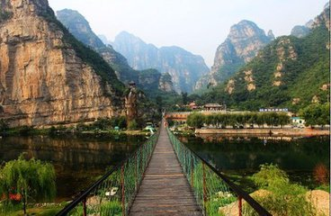
每周六/日发团
（山水美景--戏水--漂流）
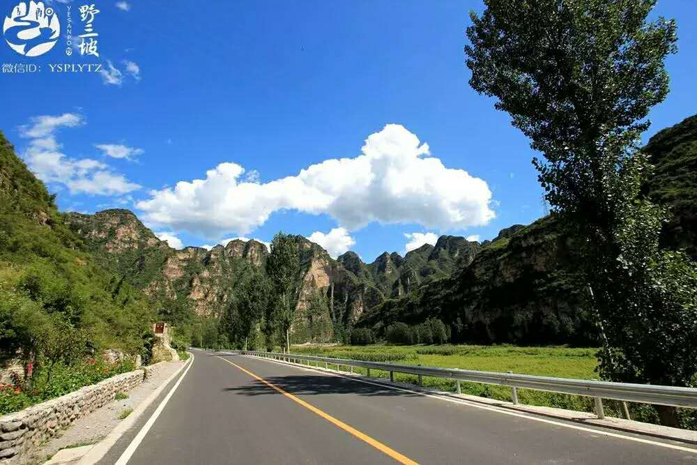
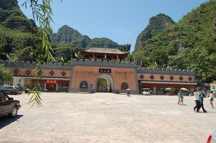
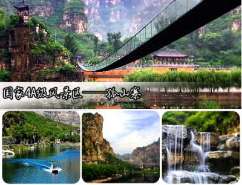
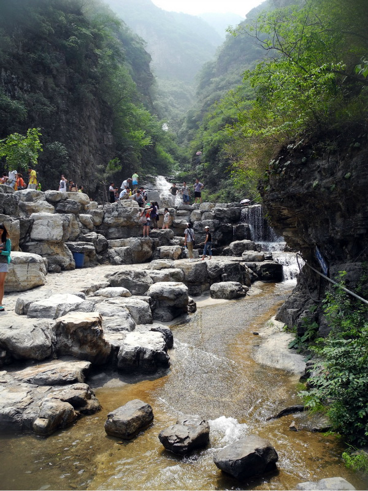
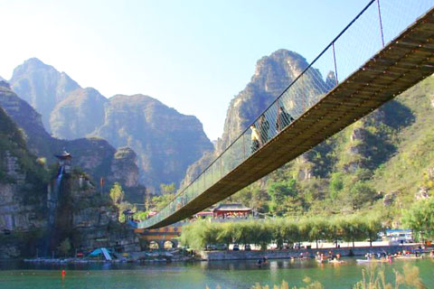
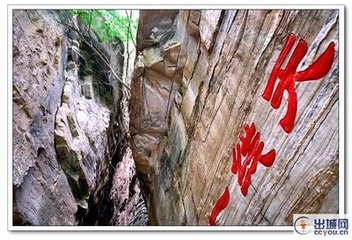
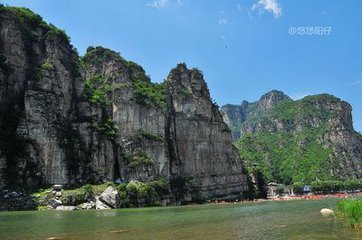
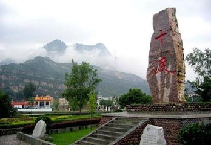
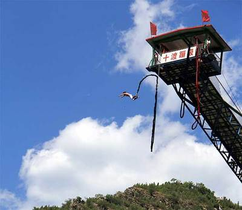
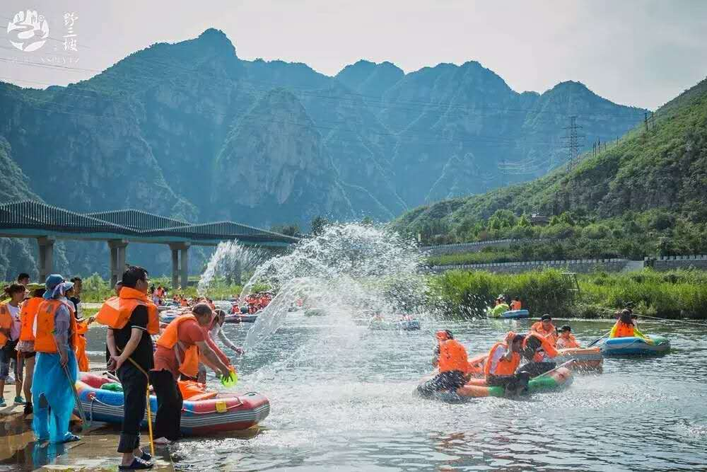
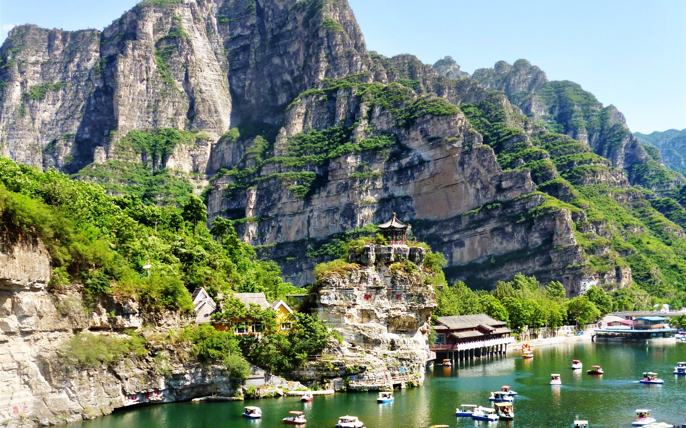
1、交通：全程空调旅游汽车
2、门票：所列景点第一门票(自费娱乐项目除外)
3、餐食：自理
4、其他：专线导游、旅行社责任险
自费娱乐项目
详见行程单
无
无
1、请注意集合时间、地点，认清楚游览车的号码，务必准时集合，以免影响行程；
2、请务必保持电话畅通，方便导游和游客之间联系；
3、在旅游过程中，注意自己的钱包及贵重物品。务必保证人身安全；
4、由于行程中有自费漂流等水上项目，建议游客携带一身换衣衣服；
5、请游客携带本人身份证，行程中已含旅行社责任险，建议游客加入人身意外险；
6、如自费项目自行购买需补齐车费差价50元/人；